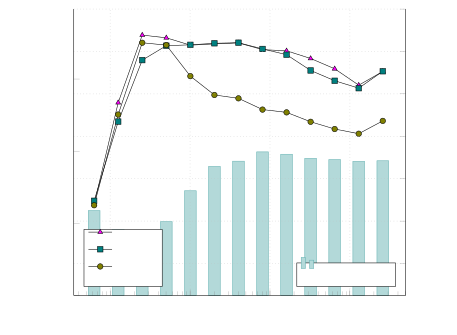
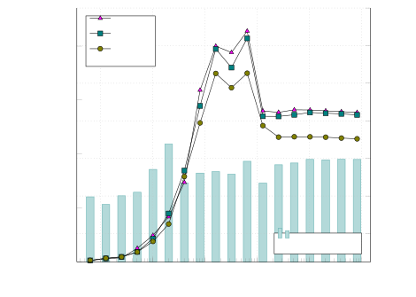
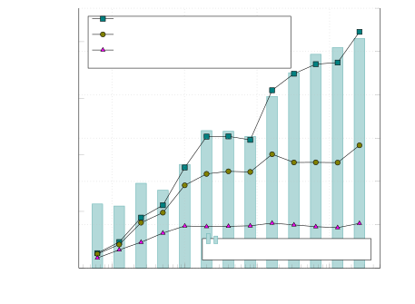

Online Softmax：为什么多算几次，反而能少读写显存？
结论：Online Softmax 不近似概率，也不减少需要查看的 Logit。它维护“当前最大值＋按这个最大值缩放的指数和”，把两次统计扫描合成一次；进一步加入加权 Value 累加器，就能按块计算 Attention，而不把完整概率矩阵写回显存。
类型：基础知识 / Paper 解读 / 推理工程。发布：2026-10-26。前置：指数、求和、矩阵乘法。本文以2018年原论文主章节顺序解释，再补充分块Attention与工程边界；论文测量、本地验证、教学推导分别标记。没有进行GPU速度复测。
先建立直觉：最大值只是一个可移动的坐标原点
假设你在累计一批金额，但单位随着新数据变化。最初以“元”为单位，后来改成“百元”，此前累计的数必须换单位再继续加。Online Softmax做的不是丢弃旧数据，而是遇到更大Logit时，给旧指数和换一个统一基准。
这与FlashAttention的关系非常具体：一个Query不能把每个Key块分别Softmax后直接相加，因为每块分母不同。可合并的统计量让不同块重新对齐到共同分母，而不是把局部概率误当全局概率。
这一篇应该记住三件事：
- Softmax平移不变是实数恒等式，不是低精度Bitwise一致性保证。
- Online统计量可合并；完整Softmax输出通常仍需第二遍读取。
- 分块Attention利用的是加权归约，无需输出完整P矩阵；不是把标准Attention的二次乘加变成线性。
1｜原论文 Introduction：优化原始Softmax，而不是换一种模型
原始论文为 Online normalizer calculation for softmax，作者Maxim Milakov、Natalia Gimelshein，NVIDIA；arXiv:1805.02867，首版2018-05-08，修订版2018-07-28。官方代码为NVIDIA/online-softmax。本文读取原文HTML与版本记录。[1][2]
此前已有Hierarchical Softmax、Sampled Softmax等办法降低大词表成本，但它们往往改变计算问题/训练目标或仍需要Softmax。作者讨论的是：相同的标准Softmax能不能减少内存访问？
当输入超过Cache、Kernel受Memory Bandwidth限制，多几次指数/乘法未必是主要问题；重复从Global Memory取数据才可能主导时间。不能简单用FLOPs减少多少判断加速。
2｜Original Softmax：先解决指数溢出
给定一个长度N的Logit向量x，定义：
变量含义：xᵢ是第i个未归一化分数；pᵢ是对应概率；j遍历同一行所有有效位置；N可以是Vocabulary大小，也可以是一行Attention的Key数，不能混淆二者。
例如x=[1,2,3]，概率约为[0.09003,0.24473,0.66524]。若直接算很大的exp(1000)，浮点会溢出；先减最大值m：
为什么相同？分子分母同乘exp(−m)即可约去。有限输入情况下，指数项≤1且至少一项为1，减少指数溢出风险；小项仍可能Underflow，有限精度求和也仍有误差。若全行Mask为−∞，−∞−(−∞)是NaN，需要额外处理，而不是套公式。
朴素访问账本
| 实现 | Input扫描 | Output写入 | 每元素访问数 |
|---|---|---|---|
| 不稳定Naive | 分母一次、输出一次 | 一次 | 2读＋1写 |
| Safe Softmax | 最大值、分母、输出各一次 | 一次 | 3读＋1写 |
| Online Softmax | 在线统计一次、输出一次 | 一次 | 2读＋1写 |
这是论文的算法访问模型，不是任意现代GPU实际DRAM计数：短向量可能一直在寄存器/Shared Memory，后续Load可能命中Cache，框架也会Fuse。对N元素FP32数组，按独立完整传输估算Safe16N Bytes、Online12N Bytes；理论Traffic少25%，仅在带宽完全主导且其他开销不变时对应最多约4/3倍加速。这是推导，不是本机实测。
3｜Online Normalizer：旧分母必须一起换基准
处理前t个Logit，维护：
新输入xₜ到来时：
ℓₜ = ℓₜ₋₁ · exp(mₜ₋₁ − mₜ) + exp(xₜ − mₜ)
这里m、ℓ是两个标量。第一项把旧数据从旧最大值基准移到新基准，第二项加入新数据。若最大值不变，旧和不缩放；若新值更大，旧和乘小于1的因子。漏掉重缩放会得到错误分母。
逐步例子：[1,2,3]
| 已处理输入 | m | 旧和缩放＋新项 | ℓ |
|---|---|---|---|
| [1] | 1 | 0＋1 | 1 |
| [1,2] | 2 | 1×exp(−1)＋1 | 1.367879 |
| [1,2,3] | 3 | 1.367879×exp(−1)＋1 | 1.503215 |
最终还需要对每个xᵢ计算exp(xᵢ−3)/1.503215才得到概率。在线得到分母，不等于每个最终pᵢ首次看到时就确定：未来Logit可能改变分母。
为什么可以并行？合并两个独立块
块A统计为(m_A,ℓ_A)，块B为(m_B,ℓ_B)：
ℓ = ℓ_A exp(m_A−m) + ℓ_B exp(m_B−m)
在实数算术里，这等价于统计A∪B，适合Warp/Block/分片Reduction。有限精度下，不同Reduction Tree会产生不同舍入；“数学可结合”不等于机器Bitwise可结合。
教学示意：展示实际统计量与操作，不代表GPU物理布局。
4｜Softmax＋Top-K：为什么不必保存所有概率？
对于同一行，指数单调、分母共同，因此实数下TopK(softmax(x)) = TopK(x)。如果只需要K个位置及它们的全局Softmax概率，可以同时维护(m,ℓ)与Top-K Logits，最后只计算K个概率，不必写回完整N元素概率再运行Top-K。[2]
重要区别： K个概率之和通常小于1，这是完整Softmax分布中选出的概率；若再在K项上重归一化，得到的是另一个“截断后分布”。Top-k Sampling可能需要这种再归一化，但不能把两者当同一个输出。
Top-K维护随K增长成本增加，局部候选队列/排序/寄存器压力可能压过IO收益；Top-K很大时不应假设同样的5×。
5｜原论文 Benchmark：V100的结果证明了什么？
平台：Tesla V100 PCIe 16GB；ECC和Persistence开启；CUDA9.1；CUB1.8.0；FP32；Batch4000或10；Top-K实验K=5。下图保留原论文图，不是新硬件实测。[2]

原图Figure 1。横轴Logit向量长度N（原文V）；左轴Online/Safe比例，右轴Elements/s。较长向量/大Batch时DRAM流量开始主导，Online接近1.3×；短向量各方案接近。

原图Figure 2。只有10个Threadblock时GPU未充分占满，绝对吞吐较低，Online优势约1.15×而非大Batch的1.3×。少读写不保证硬件始终Bandwidth-bound。

原图Figure 3。对比包含Safe未融合、Safe融合、Online融合；最高约5×不仅来自Online统计，还来自不物化完整概率和融合。不能将5×归因为Softmax公式本身。
| 作者测量 | 报告收益 | 结论边界 |
|---|---|---|
| 大Batch Softmax，较长向量 | 约1.3× | V100/FP32，带宽瓶颈明显 |
| 小Batch Softmax | 约1.15× | 占用不足/Latency暴露 |
| 大Batch Online＋Top5，相对Safe未融合 | 最高约5× | 作者分解为Fusion约2.5×、Online约2× |
| K增大至10/15/30 | 收益约3.5×/2×/1.4× | 维护Top-K本身越来越贵 |
论文并没有给出Mac、NPU或现代GPU的相同加速保证，也没有证明整个LLM Decode提高1.3×/5×。原v2特别澄清Fusion对5×的贡献；这里采用修订口径。
6｜Results：算法省流量，不改变标准Softmax目标
原论文结果是少一次输入统计扫描，并为Top-K融合提供充分统计量。时间复杂度仍O(N)，完整输出仍O(N)，额外统计量O(1)。现代实现若已经把整行缓存在片上、使用高效Reduction，原论文的访问模型未必是最合适Baseline。
原算法是数值稳定形式，但不保证与另一种Reduction Order逐Bit一致。工程上要比较Tolerance、任务结果和有限值，而不只是array_equal。
7｜Discussion与后续：加入Value累加器，走向分块Attention
以下为结合FlashAttention原文的扩展推导，不是2018年论文已经实现完整Transformer Attention的声明。[3]
先声明一个Head的Tensor Shape
假设某层模型Hidden=4096、Query Heads=32、Head Dimension D=128；此处先讲普通MHA单Head，不推断任何真实模型配置。Query块Q为B_q×D，Key块K为B_k×D，Value为B_k×D_v（常见D_v=D）。Projection发生在上层，本文从已得到Q/K/V开始。
S = Q Kᵀ / sqrt(D)的Shape为B_q×B_k；每个Query行需要跨全部有效Keys归一化。P与S同Shape；O = P V为B_q×D_v。
不保存P，只维护未归一化Value和
每个Query维护标量m、标量ℓ和D_v维向量u：
处理一个Key/Value块，得到该块m_b、ℓ_b、u_b，再合并：
ℓ′ = exp(m−m′)ℓ + exp(m_b−m′)ℓ_b
u′ = exp(m−m′)u + exp(m_b−m′)u_b
两个缩放因子都是标量；作用于ℓ和u，u仍D_v维。Q块总状态为B_q×(D_v＋2)，而不是整层N×N概率矩阵。S块只暂存在片上，计算完贡献就能释放。
一个可手算的Attention例子
单Query的Logits=[1,2,3]，Value=[10,0,−10]，D_v=1；前两项为块A，后一项为块B：
- A：m_A=2，ℓ_A=1＋exp(−1)=1.367879，u_A=10×exp(−1)=3.678794。
- B：m_B=3，ℓ_B=1，u_B=−10。
- 合并：m=3，ℓ=1.503215，u=3.678794×exp(−1)−10=−8.646647。
- O=u/ℓ≈−5.752104，等于一次完整Softmax加权Value。
Prefill、Decode与训练分别受什么影响？
| 阶段 | 计算Shape / 状态 | Online统计的作用 | 不会解决什么 |
|---|---|---|---|
| Prefill | 多Query对已有Key块；Causal Mask | Block间正确归一化，避免完整S/P落HBM | Dense Attention乘加仍随N²增长 |
| Decode | 一/少数Query扫描历史K/V | Split-K分片统计/输出可合并 | 不让KV Cache变小，也不免读全部Dense KV |
| Speculative Verify | 一次多个Query | 多行分块/合并 | Draft接受率、Kernel形状与Rollback另算 |
| Training Backward | 需要Attention梯度 | FlashAttention保存较小统计，按块重算S/P | 用额外计算换少IO，仍需实现正确梯度 |
例如N=8192，一张FP16单Head Score矩阵为8192²×2 Bytes=128 MiB；若32Head全部同时物化，是4 GiB，仅这一组Score，不包括P/Gradient。分块避免这类完整中间矩阵，但KV、Q和输出仍存在。这是Tensor容量推导，不是所有框架的实际峰值。
FlashAttention原文IO复杂度写O(N²D²/M)，M为片上可用存储的Element数量，在其分析范围内优于标准O(N²＋ND) HBM访问；固定D/M时对N仍可二次增长，不能称“FlashAttention让所有复杂度线性”。它的Exact意为不引入Sparse/Low-rank近似，不是IEEE逐Bit完全相同。[3]
8｜本地正确性验证与边界
2026-10-26，macOS arm64、Python3.12.2、NumPy2.4.6，CPU float64；随机Seed20261026，N=3/17/257/1024。在线递推与Dense稳定Softmax最大绝对误差≤2.78×10⁻¹⁶，两块合并误差≤5.56×10⁻¹⁷。检查脚本可在实验文章下载；这是正确性检查，不是Python Loop的速度Benchmark。
必须处理： Empty Block不要让−∞−−∞进入指数；全Mask行按框架约定返回/拒绝；FP16/BF16输入并不意味着分母累加用相同精度；NaN/Inf需单独诊断；Dropout、Mask、Bias、RoPE与KV格式在上层决定语义，不能因公式一样省略。
对于CPU/NPU，原理可用但收益取决于SIMD、Local Memory、Compiler Fusion、硬件支持与Data Layout。不要把Serial Python递推速度拿来判断GPU Kernel优劣。
9｜自己的洞见、工程清单与知识树下一步
洞见： Online Softmax是“可合并统计量”改变数据流的例子。真正值得记住的是如何把不能局部归一化的问题，转换成能流式/分片合并的状态，而不是背一个递推式。
工程清单：
- 查清现有Baseline是否物化S/P、是否真的重复读HBM。
- 标注Input/Accumulator/Output精度，记录Reduction Order与Mask处理。
- 分开测Prefill、Decode、Verify；包含不同Head Ratio/Block Shape。
- 测Peak Memory与实际DRAM Bytes，不只FLOPs。
- 正确性用合理误差/任务评测；Exact算法不保证Bitwise一致。
后续知识节点可继续学习FlashAttention Backward、Split-K Decode、GQA的KV重用、Online LogSumExp与Distributed Reduction。本篇只解释它们共享的归一化机制，不假装已经完整讲完每一种Kernel。
来源
- Online Softmax版本记录：Milakov / Gimelshein，2018。
- Online Softmax原文HTML：章节、Algorithm3/4、Figure1/2/3及V100测量；作者代码。原图保留原作者内容，非重绘，版权与许可以原论文为准。
- FlashAttention原论文，Dao等，2022；原文HTML、官方实现。本文仅将其用于后续机制关联，不代替整篇论文精读。
- PyTorch Numerical Accuracy：有限精度、Batch与Reduction差异。